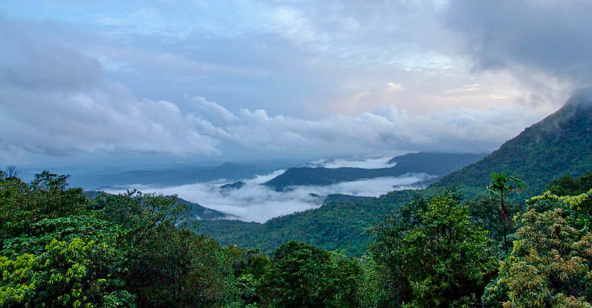
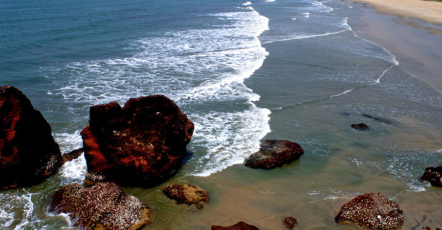
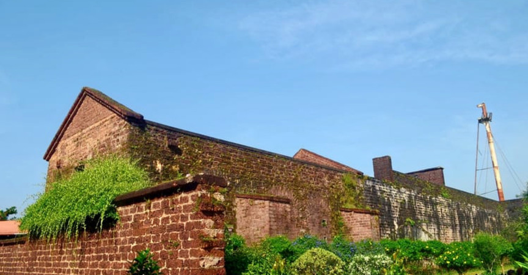

KANNUR
Kannur is a coastal city in the south Indian state of Kerala. It was once an ancient trading port. Enduring monuments such as 16th-century St. Angelo Fort, once occupied by European colonial forces, show the city’s significant role in the spice trade. Housed in a former palace, the Arakkal Museum highlights Kerala's one Muslim royal family. The palm-fringed sands of Payyambalam Beach run along Kannur’s western shore.

Palakkayam Thattu

Palakkayam Thattu is one of the alluring places to visit in Kannur near the Western Ghats because of the verdant greenery and dizzying height of about 3350 feet above the sea level. It also happens to be one of the most visited hill stations in the state of Kerala. Populated by dense forests and several hillocks, the quaint hamlet is a favoured destination for avid trekkers.
Palakkayam Thattu is a natural paradise with astounding tranquillity and sereneness which is perfect for long weekend destinations overlooking the lavish foliage from the top of the mountains. If you are looking for an escape from the everyday hustle and bustle of your life, then this Keralan hill-station is the right place.
-
Location:Karuvanchal - Vellad, Chadikundu-Mavumchal, Palakkayam, Thattu, Kerala 670571
-
Timings: 5:00 AM to 9:00 PM
-
Entry Fee: INR 35 per adult
Readmore
Payyambalam Beach

The Payyambalam Beach is considered as one of the unspoiled beaches in Kerala, adorned with golden sand and foamy white waters of the Arabian Sea. With its peaceful and inviting aura, the Payyambalam beach is an ideal destination for visitors to spend a long holiday.
You can literally unwind and rejuvenate yourself amidst the palm trees and casuarinas that make the shore more alluring by casting various shades of greenery. Being one of the most famous tourist places in Kannur, it lets you relish amazing nature walks, boating, swimming, and other thrilling adventure activities along with the 4 km long rhythmic dance of the turquoise waters of the sea.
-
Location: Payyambalam Beach Walkway, Payyambalam, Kannur, Kerala 670001
-
Timings: Open 24 hours all through the year.
Readmore
St. Angelo Fort

Considered as one of the most historic sites in Kannur, the St. Angelo Fort was constructed by the first Portuguese viceroy of India. The fort is triangular in shape appears as a massive yet magnificent structure standing at the helm of the ruthless sea.
The laterite walls made of stone lend it an even more imposing air and it is a must-visit destination for architecture students. The sea wall segregating the fort from the sea provides breathtaking views of the Mopilla Bay. Visit the fort for taking a relaxing walk in the complex and enjoy stunning views of the Arabian Sea.
-
Distance: 2.0 km from Kannur bus stand.
-
Timings: 8 AM to 6 PM, every day
-
Entry fee: INR 10.
Readmore